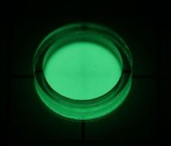

|
Promécio |

Utilizações:
-Em alguns tipos específicos de baterias atômicas, que podem ter aplicação em marca passo, mísseis e equipamentos de rádio
-Emissão de luz em tintas especiais por efeito de decaimento radioativo
-Como fonte de raios-x e radioatividade em equipamentos de medida
-Possível fonte de calor para geração de energia em sondas de espaço profundo
-Avaliação de espessura de materiais pela medição da passagem de radiação
O promécio é feito artificialmente.
 -Radioativo
-Radioativo